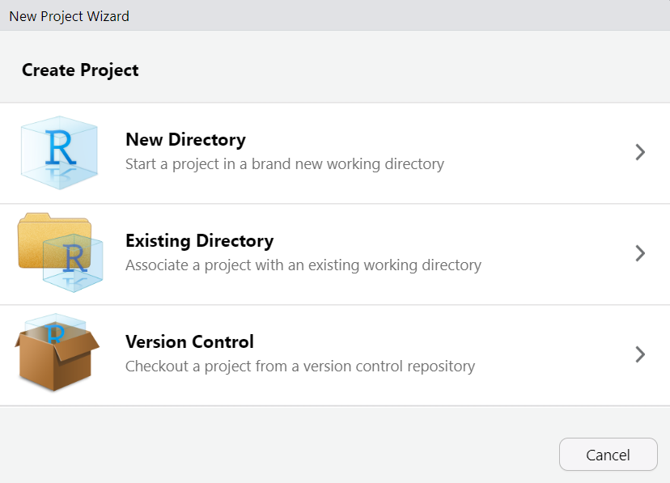
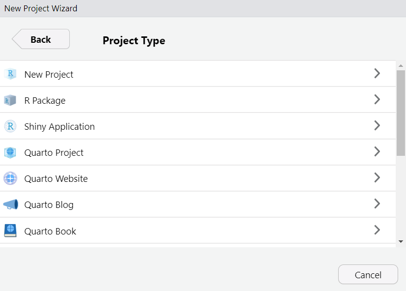

This part gives a short introduction to R and RStudio. If you are familiar with the programs and are not interested in the R vs tidyverse “distinction”, you can skip this section.
4.1 What is R & RStudio?
R: R is a free software environment for statistical computing and graphics. It compiles and runs on a wide variety of UNIX platforms, Windows and MacOS (see https://www.r-project.org/).
R Studio: Coding environment for R, built by Posit.
Used by millions of people weekly, the RStudio integrated development environment (IDE) is a set of tools built to help you be more productive with R and Python. It includes a console, syntax-highlighting editor that supports direct code execution. It also features tools for plotting, viewing history, debugging and managing your workspace.
Of course there are other IDEs (e.g., Visual Studio Code, but if you use R, RStudio is most likely the way to go.
4.2 How to work with R and RStudio?
Exercise: Open RStudio!
This should look like this, maybe or probably with a different appearance (this is the Dracula theme). You can change this via Tools > Global Options > Appearance
You should never work directly in the Console, but always use a R-script (e.g., script.R) or even better a Quarto document (e.g., script.qmd). It is important to understand and reproduce everything you did.
Environment/History/…/Tutorial
Environment: contains all objects that were created or loaded during an R session
History:
… e.g., the free and open source distributed version control system git
Packages: overview of the (loaded &) installed packages
Help: When you ask for help (e.g., regarding a specific function in R: ?mean)
Viewer: E.g., previewing rendered Quarto documents
4.2.2 Projects
It is also reasonable to use the project option. This means, whenever you start a new project (e.g., a scale-manual), create an project: File > New Project
Exercise: Create an project!
Choose between:
New Directory (for today)
Existing Directory
Version Control (this is recommended, but is beyond the scope of this workshop)

Choose a project type (today a R project or Quarto project)

Provide a short name, set the check mark Open in new session and click Create Project
4.3 Short introduction to the R programming language
This section gives a (very?) brief introduction to the R programming language.
id age sex
Min. :1.00 Min. :12.00 Min. :1.0
1st Qu.:1.75 1st Qu.:12.00 1st Qu.:1.0
Median :2.50 Median :12.50 Median :1.5
Mean :2.50 Mean :12.75 Mean :1.5
3rd Qu.:3.25 3rd Qu.:13.25 3rd Qu.:2.0
Max. :4.00 Max. :14.00 Max. :2.0
4.4 Base R vs. & tidyverse
Besides the functionality of base R(R Core Team, 2023), there is the so-called tidyverse(Wickham, 2023) within R. The tidyverse is a collection of R packages (see Figure 4.1) that “share an underlying design philosophy, grammar, and data structures” and are (specifically) designed for data science (see https://www.tidyverse.org/).
Figure 4.1: tidyverse package collection
Within the tidyverse package collection, the dplyr package (Wickham et al., 2023) provides a set of convenient functions for manipulating data. Together with the pipe operator %>% from the magrittr package (Bache & Wickham, 2022)), it is an extremely powerful approach to manipulate data in a clear and comprehensible way. The native4R pipe |> was introduced with Rv4.1.0.
What exactly does the pipe operator |>?
The tidyverse style guide suggests using the pipe operator “to emphasize a sequence of actions”. The pipe operator can be understood as “take the object and then” pass it to the next function. In the following, the use of the base R pipe operator is shown:
Take the data frame exDatand then
Calculate descriptive statistics using the describe function from the psych package (Revelle, 2023)and then
Create a table with the kable function from the knitr package (Xie, 2023)
Nevertheless, when there are many functions, it gets kind of messy and difficult to comprehend. For more information on how to use pipes, see Chapter 4 of the guide.
# Introduction to R & RStudioThis part gives a short introduction to `R` and `RStudio`. If you are familiar with the programs and are not interested in the `R` vs `tidyverse` "distinction", you can skip this section.```{r}#| label: intro-r-prep#| echo: false#| warning: falseexDat <-readRDS("exampleDat.RDS")```## What is R & RStudio?- **R**: `R` is a free software environment for statistical computing and graphics. It compiles and runs on a wide variety of UNIX platforms, Windows and MacOS (see [https://www.r-project.org/](https://www.r-project.org/){target="_blank"}). - **R Studio**: Coding environment for `R`, built by [Posit](https://posit.co/){target="_blank"}. Some advertisement from the [Posit website](https://posit.co/downloads/){target="_blank"}: > Used by millions of people weekly, the RStudio integrated development environment (IDE) is a set of tools built to help you be more productive with R and Python. It includes a console, syntax-highlighting editor that supports direct code execution. It also features tools for plotting, viewing history, debugging and managing your workspace. Of course there are other IDEs (e.g., [Visual Studio Code](https://code.visualstudio.com/){target="_blank"}, but if you use `R`, `RStudio` is most likely the way to go.## How to work with R and RStudio?::: {.callout-caution collapse="true"}## Exercise: Open RStudio!This should look like this, maybe or probably with a different appearance (this is the Dracula theme). You can change this via `Tools > Global Options > Appearance`:::In `RStudio` there are different panes^[You can customize them: `Tools > Global Options > Pane Layout`]:### Panes- **Console** - Here you can access `R` - E.g., ask `R` what is: `2 + 2`- **Source/Script** - Editor to save scripts::: {.callout-warning}You should **never** work directly in the Console, but always use a R-script (e.g., script.R) or *even better* a Quarto document (e.g., script.qmd). It is important to understand and reproduce everything you did.:::- **Environment/History/.../Tutorial** - Environment: contains all objects that were created or loaded during an R session - History: - ... e.g., the free and open source distributed version control system [git](https://git-scm.com/) - Tutorial: A tutorial to learn `R` with the `learnr` package [@R-learnr]- **Files/Plots/Packages/Help/Viewer** - Files: is kind of the file manager - Plots: shows the generated plots - Packages: overview of the (loaded &) installed packages - Help: When you ask for help (e.g., regarding a specific function in R: `?mean`) - Viewer: E.g., previewing rendered Quarto documents### ProjectsIt is also reasonable to use the **project option**. This means, whenever you start a new project (e.g., a scale-manual), create an `project`: `File > New Project`::: {.callout-caution collapse="true"}## Exercise: Create an project!1. Choose between:- **New Directory** (for today)- Existing Directory- Version Control (this is recommended, but is beyond the scope of this workshop)2. Choose a project type (today a `R project` or `Quarto project`)3. Provide a short name, set the check mark `Open in new session` and click `Create Project`:::## Short introduction to the R programming languageThis section gives a (very?) brief introduction to the `R` programming language. ::: {.callout-tip collapse="true" appearance="simple" title="For (more) comprehensive introductions..."}...or overviews of the language see (e.g.): - [R Manual](https://cran.r-project.org/doc/manuals/r-release/R-intro.html) on the [CRAN](https://cran.r-project.org) website- [R for Data Science](https://r4ds.had.co.nz/) by Hadley Wickham and Garrett Grolemund- [Hands-On Programming with R](https://rstudio-education.github.io/hopr/) by Garrett Grolemund- [Introduction to R](https://stats.oarc.ucla.edu/stat/data/intro_r/intro_r_interactive_flat.html) by the [IDRE Statistical Consulting Group](https://stats.oarc.ucla.edu/ucla/policies/)- ...:::> To understand computations in R, two slogans are helpful:>> - Everything that exists is an object.\> - Everything that happens is a function call.>> ::: {style="text-align: right;"}> -- John Chambers (creator of the S programming language)> :::### BasicsBefore working with `R`, there are a few basics you need to know::::: {.columns}::: {.column width="40%"}- `R` is a **case-sensitive** programming language. This means that R distinguishes whether a word is written in upper or lower case:::::: {.column width="10%"}<!-- empty column to create gap -->:::::: {.column width="40%"}```{r}#| label: case-sense#| code-fold: false#| code-line-numbers: false"name"=="Name"```::::::::::: {.columns}::: {.column width="40%"}- **Values** are assigned to objects using `<-`:::::: {.column width="10%"}<!-- empty column to create gap -->:::::: {.column width="40%"}```{r}#| label: r-assing#| eval: false#| code-fold: false#| code-line-numbers: falsea <-"Hello world!"```::::::::::: {.columns}::: {.column width="40%"}- **Arguments** within functions are assigned using `=`:::::: {.column width="10%"}<!-- empty column to create gap -->:::::: {.column width="40%"}```{r}#| label: r-arg#| eval: false#| code-fold: falsedf <-data.frame(x =1:4,y =3:6)```:::::::::: {.callout-caution collapse="true"}## Exercise: Create a new R script`File > New File > R Script` or alternatively use the shortcut `Ctrl + Shift + N`Then save the file `File > Save` or `File > Save As`. Shortcut: `Ctrl + s`:::### Data TypesThe basic data types^[We omitted the `complex` type.] in `R` are depicted in @tbl-data-type-R.+---------------+-----------------------------------------+-----------------------+| Type | Description | Value (example) |+===============+=========================================+=======================+| **Numeric** | Numbers with decimal value or fraction | `3.7` |+---------------+-----------------------------------------+-----------------------+| **Integer** | Counting numbers and their additive | `2`, `-115` || | inverses | |+---------------+-----------------------------------------+-----------------------+| **Character** | aka string. Letters enclosed by quotes | `"Hello World!"`,`"4"`|| | in the output. | |+---------------+-----------------------------------------+-----------------------+| **Logical ** | boolean | `TRUE`, `FALSE` |+---------------+-----------------------------------------+-----------------------+| **Factor** | Categorial data \ | \ || | - *Level:* characteristic value | `0`, `1` \ || | as seen by R \ | `male`,`female` || | - *Label:* designation of the | || | characteristic attributes | |+---------------+-----------------------------------------+-----------------------+| **Special** | - *Missing values:* unknown cell value | `NA` \ || | - *Impossible values:* not a number | `NaN` \ || | - *Empty values:* known empty | `NULL` || | cell value | |+---------------+-----------------------------------------+-----------------------+: Basic data types in R {#tbl-data-type-R}::: {.callout-caution collapse="true"}## Exercise: Use the class function to check the data type of an object!```{r}#| label: demo-classx <-10class(x)y <-"Hello World"class(y)``````{r}#| label: demo-class-del#| echo: falserm(x,y)```:::<!--::: {.callout-note collapse="true"}## Why might factors be useful?```{r}#| label: demo-factorx <- c(1, 0, 1, 1, 0, 1, 0)print(x)fac <- factor(x, labels = c('male', 'female'))print(fac)levels(fac)``````{r}#| label: demo-factor-del#| echo: falserm(x, fac)```:::-->### Data Structures {#data-structure}`R` has a couple of different data structures^[We omitted [arrays](https://cran.r-project.org/doc/manuals/r-release/R-intro.html#Arrays-and-matrices).] which are briefly described in the following subsections.#### Vector:::: {.columns}::: {.column width="35%"}- one-dimensional array\- same data type- e.g., `c(45, 6, -83, 23, 61)`:::::: {.column width="5%"}<!-- empty column to create gap -->:::::: {.column width="60%"}::: {.callout-tip collapse="true" appearance="simple"}## Tips for handling vectorsCreate a vector with the `c` function```{r}#| label: demo-vec-0#| code-fold: falsev <-c(45, 6, -83, 23, 61)v```Or a named vector...```{r}#| label: demo-vec-1#| code-fold: falsevNam <-c(a =45, b =6, c =-83, d =23, e =61)vNam```Count the amount of items contained in vector```{r}#| label: demo-vec-2#| code-fold: falselength(v)```Vector indexing (by position)```{r}#| label: demo-vec-3#| code-fold: falsev[1]v[-3]```Slicing vectors```{r}#| label: demo-vec-4#| code-fold: falsev[3:5]```Generate regular sequences using `seq` function```{r}#| label: demo-seq-4#| code-fold: falseseq(from =0,to =20,by =2)```::::::::::#### Matrix:::: {.columns}::: {.column width="35%"}- two-dimensional\- same data type- example see on the [right](#tip-mat):::::: {.column width="5%"}<!-- empty column to create gap -->:::::: {.column width="60%"}::: {.callout-tip collapse="true" appearance="simple"}## Tips for handling matrices {#tip-mat}The `matrix` function creates a matrix from the given set of values```{r}#| label: demo-mat-0#| code-fold: falsem <-matrix(data =c(1, 2, 3, 45, 36, 52),nrow =2,ncol =3,byrow =TRUE)m```Slicing works also on matrices: `m[row , column]````{r}#| label: mat-slice#| code-fold: falsem[, 1:2]```::::::::::#### List:::: {.columns}::: {.column width="35%"}- can contain elements of various data types- often ordered collection of values- one-indexed (indexing starts with 1)- e.g., `list("hi", 2, NULL)`:::::: {.column width="5%"}<!-- empty column to create gap -->:::::: {.column width="60%"}::: {.callout-tip collapse="true" appearance="simple"}## Tips for handling listsCreate lists (with different elements, i.e., numbers and letters) with the `list` function```{r}#| label: demo-list-0#| code-fold: falsel1 <-list(1:5)l2 <-list(letters[1:5])l3 <-list(LETTERS[1:5])```Create a nested list...```{r}#| label: demo-list-1#| code-fold: falsel4 <-list(l1, l2, l3)```...or a named (nested) list```{r}#| label: demo-list-2#| code-fold: falsel4Nam <-list("Numbers"= l1,"SmallLetters"= l2,"CaptialLetters"= l3)```Access list or nested list elements```{r}#| label: demo-list-3#| code-fold: falsel4[2]l4[[2]][3]```Unlist the `list` to get vector which contains all the atomic components```{r}#| label: demo-list-4#| code-fold: falseunlist(l1)unlist(l4)```Count amount of items contained in list```{r}#| label: demo-list-5#| code-fold: falselength(l4)length(unlist(l4))```::::::::::#### Data frame:::: {.columns}::: {.column width="35%"}- various columns- different data types- variables = columns- observations = rows- example see on the [right](#tip-df):::::: {.column width="5%"}<!-- empty column to create gap -->:::::: {.column width="60%"}::: {.callout-tip collapse="true" appearance="simple"}## Tips for handling dataFrames {#tip-df}```{r}#| label: demo-df-0#| code-fold: falsedf <-data.frame(id =1:4,age =c(12, 13, 12, 14),sex =c(1, 1, 2, 2))df```Number of observations```{r}#| label: demo-df-1#| code-fold: falsenrow(df)```Show dimension (rows, columns) of dataframe ```{r}#| label: demo-df-2#| code-fold: falsedim(df)```Column names```{r}#| label: demo-df-3#| code-fold: falsecolnames(df)```Show the first two rows of the dataframe```{r}#| label: demo-df-4#| code-fold: falsehead(df, 2)```Structure of dataframe object```{r}#| label: demo-df-5#| code-fold: falsestr(df)```Some descriptive statistics using the `summary` function (for more see Section [Descriptive statistics and item analysis](#item-analy-descr)```{r}#| label: demo-df-6#| code-fold: falsesummary(df)``````{r}#| label: del-df#| echo: falserm(df)```::::::::::## Base R ~~vs.~~ & tidyverse {#baseR-tidyverse}:::: {.columns}::: {.column width="47.5%"}Besides the functionality of base `R`[@R-base], there is the so-called `tidyverse`[@R-tidyverse] within `R`. The `tidyverse` is a collection of `R` packages (see @fig-tidyverse) that *"share an underlying design philosophy, grammar, and data structures"* and are (specifically) designed for data science (see <https://www.tidyverse.org/>).:::::: {.column width="5%"}<!-- empty column to create gap -->:::::: {.column width="47.5%"}{#fig-tidyverse width=50%}:::::::Within the `tidyverse` package collection, the `dplyr` package [@R-dplyr] provides a set of convenient functions for manipulating data. Together with the pipe operator `%>%` from the `magrittr` package [@R-magrittr]), it is an extremely powerful approach to manipulate data in a clear and comprehensible way. The native^[for the difference between `|>` and `%>%` see <https://ivelasq.rbind.io/blog/understanding-the-r-pipe/>]`R` pipe `|>` was introduced with `R`[v4.1.0](https://cran.r-project.org/bin/windows/base/old/4.1.0/NEWS.R-4.1.0.html). ::: {.callout-tip collapse="true"}## What exactly does the pipe operator |>? {#what-is-pipe-op}[The tidyverse style guide](https://style.tidyverse.org/) suggests using the pipe operator *"to emphasize a sequence of actions"*. The pipe operator can be understood as *"take the object and then"* pass it to the next function. In the following, the use of the base `R` pipe operator is shown:1. **Take** the data frame `exDat` **and then** 2. Calculate descriptive statistics using the `describe` function from the `psych` package [@R-psych] **and then**3. Create a table with the `kable` function from the `knitr` package [@R-knitr]```{r}#| label: demo-pipe-1#| code-fold: false#| code-line-numbers: trueexDat |> psych::describe(fast=TRUE) |> knitr::kable(digits =2) ```In contrast, when we use a nested approach the code would look like this:```{r}#| label: demo-pipe-2#| code-fold: false#| code-line-numbers: true#| eval: falseknitr::kable(psych::describe(exDat,fast=TRUE),digits =2) ```...or maybe a little bit more clear:```{r}#| label: demo-pipe-3#| code-fold: false#| code-line-numbers: true#| eval: falseknitr::kable( psych::describe(exDat,fast=TRUE),digits =2) ```Nevertheless, when there are many functions, it gets kind of messy and difficult to comprehend. For more information on how to use pipes, see [Chapter 4](https://style.tidyverse.org/pipes.html) of the guide.:::